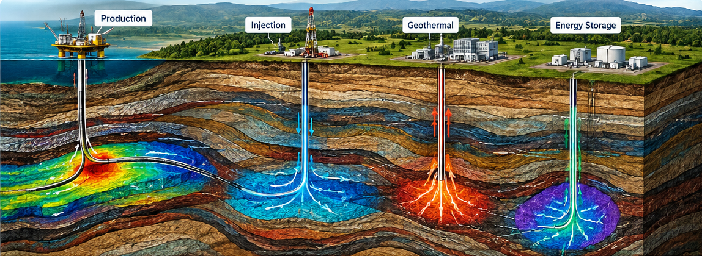
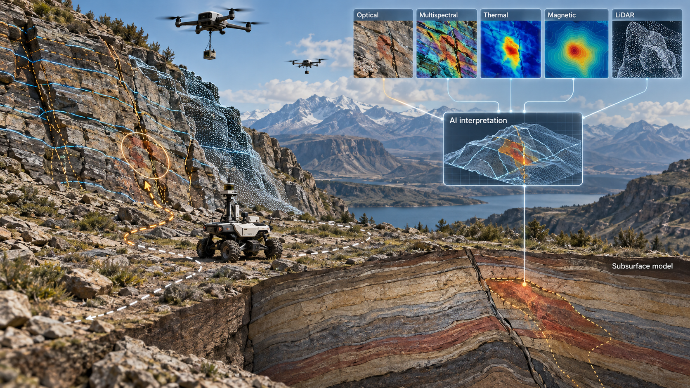
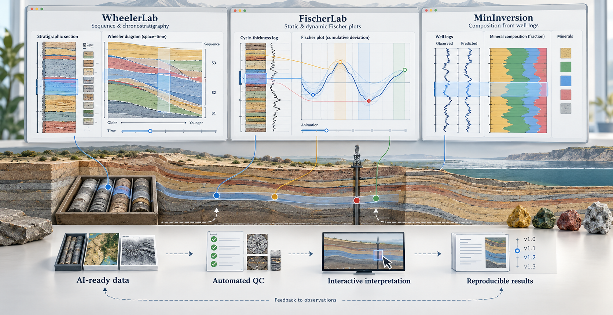

Subsurface energy systems
Subsurface energy systems connect geology, geophysics, fluid flow, geomechanics, and operational decisions. GeoOrbit Lab studies how seismic data, well information, reservoir models, and production or injection histories can be integrated across hydrocarbon production, carbon storage, geothermal resources, and underground energy storage.

AI can accelerate reservoir characterization, create fast surrogate models for simulation, forecast system response, optimize well placement and operating plans, and detect departures from expected behavior. The aim is reliable decision support that combines physical understanding, subsurface experience, and adaptive data-driven models.
AI-assisted production optimization · Electrofacies-guided well placement
Artificial intelligence
Artificial intelligence is a central GeoOrbit Lab research theme. Machine learning, deep learning, computer vision, and multimodal data fusion connect seismic volumes, well logs, core measurements, production histories, numerical models, and remote- sensing observations. These methods support pattern recognition, property prediction, anomaly detection, and faster interpretation across scales.
The emphasis is on geologically grounded AI. Models are evaluated against physical constraints, uncertainty, data quality, and expert interpretation. Explainable and uncertainty-aware methods are especially important when predictions inform exploration, monitoring, or subsurface operations.
Carbon sequestration
Geological carbon sequestration requires defensible estimates of storage capacity, injectivity, contnment, and monitoring response. GeoOrbit Lab integrates seismic interpretation, fault characterization, petrophysics, geochemistry, and numerical modeling to assess storage systems from core to basin scale.
AI supports fault and fracture detection, rapid site screening, proxy modeling, uncertainty analysis, and the optimization of injection and monitoring strategies. Current research includes characterization of the San Juan Basin CarbonSAFE site using legacy 2D and 3D seismic data and machine-learning-assisted fault analysis.
Geothermal
Geothermal research applies subsurface characterization to the search for heat, permeability, fluid pathways, and sustainable circulation. GeoOrbit Lab is interested in integrating seismic interpretation, well logs, temperature and pressure observations, structural geology, and reservoir simulation to evaluate geothermal systems.
AI can help screen prospective areas, identify fracture-controlled flow, estimate reservoir properties, build rapid simulation surrogates, and update forecasts as monitoring data arrive. These tools can support resource assessment, well targeting, circulation design, and long-term reservoir management.
Seismic interpretation
Seismic data provide the spatial framework for understanding subsurface structure, stratigraphy, and rock properties. GeoAIOrbit Lab combines spectral decomposition, inversion, seismic attributes, spatial coherence, and time-frequency analysis to resolve faults, depositional architecture, and reservoir variability.
AI-assisted interpretation extends these workflows through automated fault and horizon detection, attribute fusion, semantic segmentation, and rapid screening of large seismic volumes. Interpretation experience remains central to quality control, geological context, and uncertainty assessment.
Robotics and UAVs
GeoOrbit Lab explores how autonomous and semi-autonomous robots and uncrewed aerial vehicles can make geological and geophysical data collection safer, faster, and more repeatable. Areas of interest include AI-assisted route planning, automated outcrop and fracture mapping, and coordinated acquisition of optical, multispectral, thermal, magnetic, and LiDAR observations.
Computer vision can identify geological features in imagery and point clouds, while onboard or near-real-time AI can flag anomalies and guide follow-up surveys. The goal is to connect field robotics directly with geological interpretation and subsurface models.

Software
GeoOrbit Lab develops focused, reproducible software that makes specialist geoscience analyses easier to inspect and repeat. New directions include AI-ready data pipelines, automated quality control, interactive interpretation, and transparent links between model predictions and their supporting observations.
- WheelerLab — interactive sequence-stratigraphic and chronostratigraphic analysis.
- FischerLab — static and dynamic Fischer plots from logs and stratigraphic data.
- MinInversion — petrophysical composition analysis from well-log data.
WheelerLab · FischerLab · MinInversion
